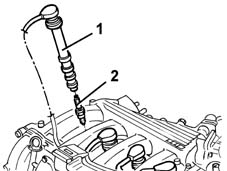

5510D10 spark plugs - r+r
- Path
- Procedures > 55 ELECTRICAL EQUIPMENT > 5510 ENGINE IGNITION > 5510D spark plugs and lead > 5510D10 spark plugs - r+r
- Kind
- repair procedure (removal / refitting; the operation number is the code)
- Applies to
- engines: 1.6 16v; all production periods
- Interactive page
- https://sloeber94.github.io/elrnDB-fMltpl/en/#/2891888
Applies to: engines: 1.6 16v; all production periods
 Removing
Removing
 Refitting
RefittingOpen the bonnet lid.
With the engine cold, blow through with compressed air in the spark plug openings to remove any foreign bodies or traces of dirt.
1. Remove the dust covers.
2. Undo the spark plugs.

Applies to: engines: 1.6 16v; all production periods
Refitting
RemovingCheck the condition of the spark plugs and, if necessary, replace them.
Fit the spark plugs and tighten them to the recommended torque.
 | Fastening | Component | Ø | Value (daNm) |
|---|---|---|---|---|
- | - | SPARK PLUGS | M14 x 1.5 | 2.7 |
Fit the dust covers on the spark plugs.
Topics that link to this page (17)
- B11 ENGINE STARTS WITH DIFFICULTY' / WHEN WARM
- B12 ENGINE STARTS WITH DIFFICULTY' / WHEN COLD
- B20 ENGINE STARTS, AND CUTS OUT STRAIGHT AWAY
- D01 ENGINE NOT RUNNING SMOOTHLY / (HESISTANT)
- D02 ENGINE NOT RUNNING SMOOTHLY / (LOSING POWER)
- D10 ENGINE IDLE IRREGULAR
- X01 EXCESSIVE FUEL CONSUMPTION
- 0010K40 40,000km service coupon, emission control versions
- 0010K48 40,000km service for emission control versions with a/c
- 0010K80 80,000km service coupon - emission control versions
- 0010K85 80,000km service for emission control versions with a/c
- 0010M20 120,000km service coupon, emission control versions
- 0010M21 120000 km service coupon for emission control versions with air conditioner
- 0010M60 160,000km service coupon - emission control versions
- 0010M68 160,000km service for emission control versions with a/c
- 1032B10 toothed timing belt - r + r for timing adjustment or replacement
- 1032B16 toothed timing belt - r r with engine removed